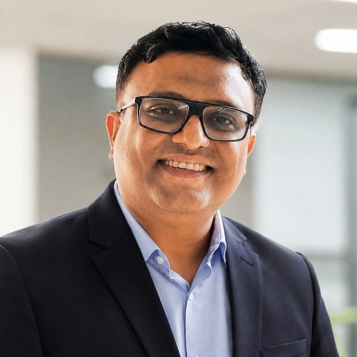

Chiluka
A dharmic companion for the family: tradition, faithfully told. Includes a paid "Ask Chiluka" guidance service and an installable app.
chiluka.online →SwapnaLoka · स्वप्नलोक · the pen site of
Builder · Innovator · Entrepreneur
A semiconductor, embedded-systems and deep-tech AI veteran with 24+ years of taking products from spec to silicon to volume. I advise, consult and coach teams, lead programs, and write poems and play percussion.

About
I'm a semiconductor and systems leader with over two decades across ASIC/SoC design, chip architecture, AI processors, embedded systems, product engineering and high-volume manufacturing. I have held engineering and product roles at Ambient Scientific, Western Digital, AMD, Freescale/NXP, Mindtree and Wipro, which gives me an end-to-end view from system architecture and silicon to software, productization and commercial deployment.
Today I lead engineering for ultra-low-power edge-AI silicon and work as an independent advisor to deep-tech startups and emerging technology organizations. Mostly I help ideas grow into viable, scalable, market-ready products.
Beyond technology I care about entrepreneurship and intrapreneurship, mentoring young engineers, semiconductor skilling and India's deep-tech ecosystem. I'm also a trained Tabla and Mridangam player, a Hindi poet who writes as "Noor" / "Sopaan Noor", and a teacher of rhythm.
Building technology with purpose, businesses with responsibility, teams with trust, and people with empathy.
Builder · Innovator · Entrepreneur
I learn by shipping. Alongside silicon programs, I start and grow ventures where technology meets culture, learning and well-being.
A dharmic companion for the family: tradition, faithfully told. Includes a paid "Ask Chiluka" guidance service and an installable app.
chiluka.online →A lineage-centred platform connecting students with gurus of Indian classical music. Its motto is "Every swara counts."
swarakul.online →School of Rhythm and Seven Swaras, formerly Rhythm Seven. It teaches Hindustani and Carnatic music and percussion to learners from many backgrounds.
Damruki on YouTube →Took edge-AI SoC and CPU prototypes through validation, tape-out, wafer sort, OSAT and production ramp.
Built proof-of-concept products for MWC 2018/2019 and COMPUTEX 2019, including a 1 TB SD card and the first SD-form-factor NVMe card.
An early voice for open hardware in India, as an author and speaker at FOSS.IN.
Advisory · Consulting · Coaching
Journey
Part-time engagements in FPGA prototyping, deep-tech GTM, AI vision chips, cryogenic ICs, AR/VR learning, and teaching.
Owns the silicon-to-system lifecycle for ultra-low-power AI processors: spec to GDS2, verification and validation, bring-up, boards, SDK and production.
Flash-storage products (SD, microSD, SSD, NVMe), from SoC architecture to certified shipping product. Ran the SD/microSD product line.
Fusion SoC verification. Led the global graphics OVC and verified the DDR3 PHY DFx.
DMA controller architecture, a configurable SoC verification platform, and DO-254 IP. Clients included Intel and Nokia.
ARM platform SoC verification. Received the "BRAVO" award for the ARM validation suite.
IEEE 1394 FireWire and SATA IP, plus DO-254 aircraft-engine control IP.
Taught VLSI and embedded systems, and built embedded products.
Writing
I write technical guides for engineers and verse for the heart. My Hindi poetry appears under the pen name Noor / Sopaan Noor.
The open-source movement as it applies to silicon and hardware.
TechnologyPython for curious kids and working hardware engineers.
MusicA course book on rhythm, from technique to Nada Yoga.
Hindi poetryA collection of poems by "Noor".
Hindi poetryShort, warm sips of verse.
Music & arts
I started Tabla at six in Bhopal under Shri Sanjay Mishra. I then completed a 10-year course at Indira Kala Sangeet Vishwavidyalaya, Khairagarh, trained for five years in Pune with Shri Suresh Samant, and have studied for the last 15 years with Dr. Aneesh Pradhan.
Bengaluru drew me to Carnatic rhythm, and I trained in Mridangam under the late Vidwan Dr. Nandyala Ramamurthy. I have accompanied instrumental and vocal artists as well as Kathak, Bharatanatyam and contemporary dance.
I composed and recorded "Raam Gunjan", 11 bhajans to Shri Rama. I also organize Kavi Sammelans and teach through Damruki.
Bansuri Beats: Adventures of Samarth and Swapnil. Flute with Tabla and Mridangam, from Thyagaraja and Purandaradasa to bhajans and film songs. Open on YouTube →
Connect
I'm open to advisory, consulting, coaching, mentoring and speaking engagements. I also enjoy collaborating on music and poetry.
Based in Bengaluru, India